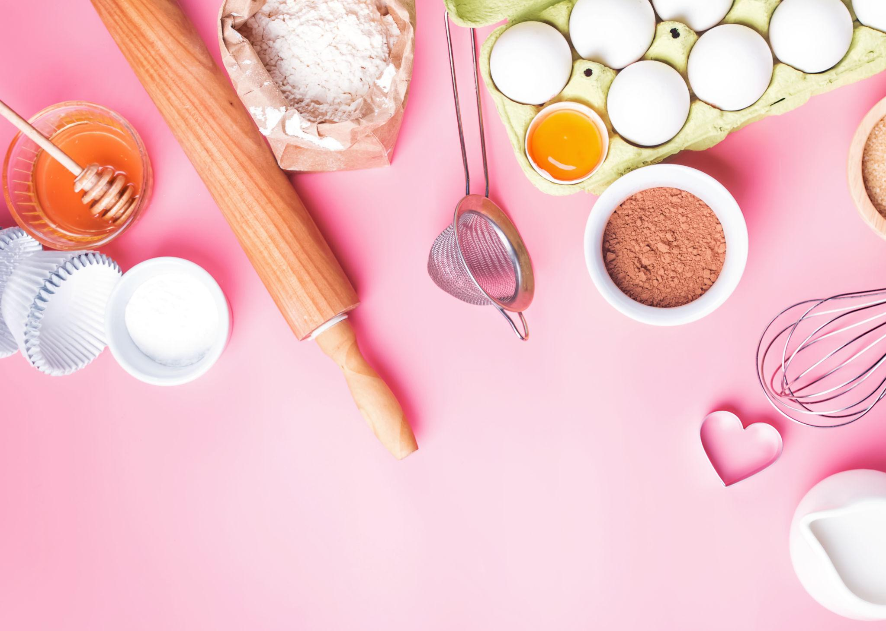

WELCOME,
This is your go-to place for simple and delicious recipes. My name is Karolina, and this website is a collection of my favorite
beginner-friendly recipes. Cooking can sometimes feel overwhelming, especially when recipes include long ingredient lists and
confusing instructions, which is why I created BAKE IT EASY to show that cooking can be simple and fun. Whether you are looking for an easy
breakfast to start your morning, a quick
lunch to get you through the day, a comforting
dinner to enjoy with family and friends, or a sweet
dessert to end the night, this website is here to make cooking a little easier and a lot more fun.

Image Credit: "Tools and ingredients for making sweet bakery like pie or cupcakes" by Diana Vyshniakova
at https://stock.adobe.com/search?k=baking+background+pink&asset_id=234890975, Adobe Stock Standard License.
WHAT MAKES THIS WEBSITE SPECIAL?
All recipes are beginner-friendly and include:
- GROCERY LIST
-
A complete list of all the ingredients that you will need.
This makes it easy to check what you already have and what you need to buy before beginning the recipe.
- STEP-BY-STEP INSTRUCTIONS
-
Clear and simple directions that guide you through every part of the cooking process.
Each recipe is written with beginners in mind, so you can follow along with confidence.
- FUN FACT
-
Learn an interesting fact about the dish while you make it!
It's there to take the stress out of cooking and make it a little more fun and enjoyable.
Understanding the ingredients you use is an important part of cooking, so before you get started you can explore the
USDA Nutrition Database to learn more about different foods and their nutritional information.
Everyone starts somewhere, so I hope that these recipes will encourage you to cook more often and add a few new favorites to your recipe collection.
Are you ready? Grab your ingredients, put on your apron, click one of the recipe categories in the navigation bar above and start cooking!